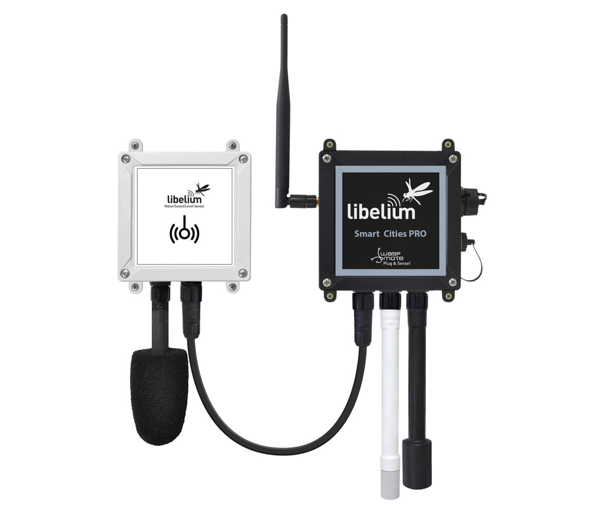

Libelium offers various types of noise sensors designed for different applications, including environmental monitoring, smart cities, and industrial settings. The quality of a Libelium noise sensor depends on several factors: Accuracy: Libelium noise sensors are known for their high accuracy in measuring sound levels across different frequencies. They are calibrated to provide precise readings, enabling users to monitor noise pollution levels effectively. Reliability: Libelium noise sensors are designed to operate reliably in various environmental conditions, ensuring consistent performance over time. They are built with durable materials and undergo rigorous testing to withstand harsh outdoor conditions. Sensitivity: Libelium noise sensors are sensitive to subtle changes in sound levels, allowing them to detect even low levels of noise pollution. This sensitivity enables users to identify potential issues and take appropriate actions to mitigate them. Compatibility: Libelium noise sensors are compatible with Libelium's IoT platforms and can integrate seamlessly with other sensors and devices. This compatibility enhances the sensor's versatility and enables users to create comprehensive monitoring solutions tailored to their specific needs.
